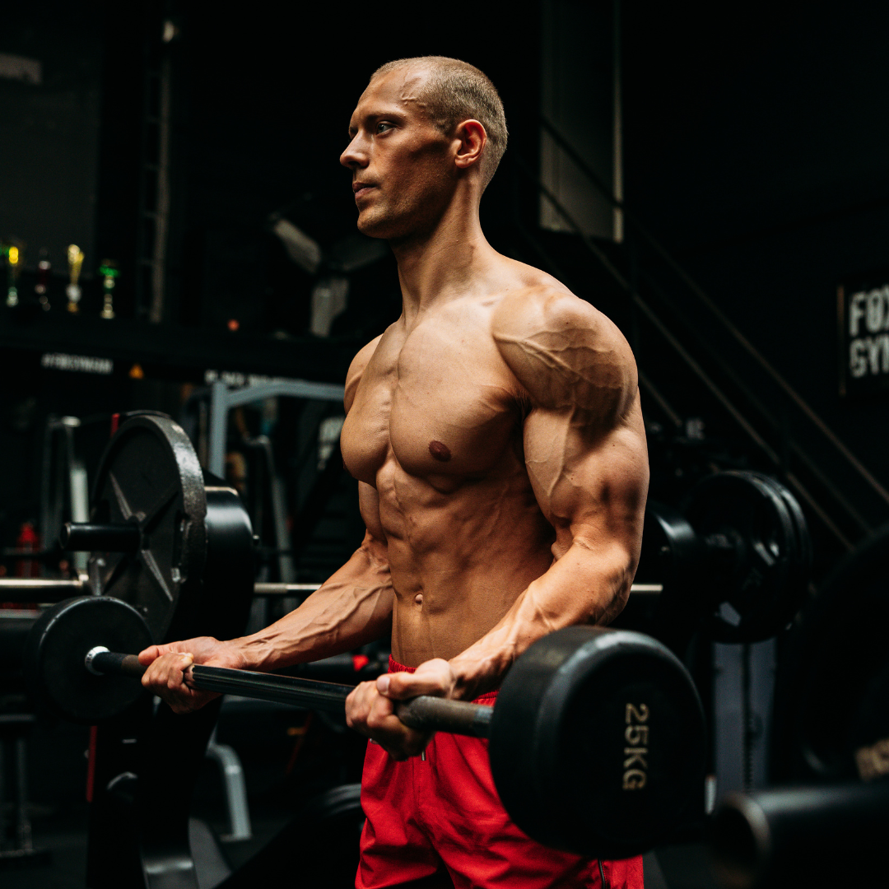

Je mist geen trainingen, je let op je voeding en je hebt een goed fysiek opgebouwd. Maar op jouw niveau zit de grootste winst niet meer in harder werken.
Ik help serieuze lifters en natural bodybuilders die een goed fysiek hebben gebouwd om de puntjes op de i te zetten. Door training, voeding, herstel en presentatie te verbeteren op basis van data, feedback en ervaring.
Bekijk of coaching bij jou pastJe traint al jaren serieus. Je voeding is op orde, je slaat geen trainingen over en je houdt je progressie goed bij. Toch heb je het gevoel dat er meer in zit dan er nu uitkomt.
Niet omdat je niet hard genoeg werkt, maar omdat je niet altijd weet wanneer en hoe je jouw training, voeding of cardio moet aanpassen naarmate je lichaam meer gevorderd is. Je maakt keuzes nu op basis van gevoel of online trends, terwijl juist de timing van die keuzes bepaalt of je plateau's doorbreekt, vet verliest of optimaal piekt.
Je hebt inmiddels een goed fysiek opgebouwd, maar de puntjes op de i ontbreken. Je trainingstechniek kan efficiënter, je set-intensiteit kan consistenter en je fysieke presentatie vele malen beter. Juist die kleine details maken het verschil tussen een 'goed' en een 'buitengewoon' fysiek.
De discipline heb je al. Wat ontbreekt is een objectief, datagedreven plan, snelle feedback en een coach die precies weet welke knoppen hij op welk moment moet omdraaien. Zodat je niet langer hoeft te twijfelen of je wel op de goede weg zit, maar met 100% vertrouwen kunt bouwen aan jouw absolute topfysiek.
(Twee-)wekelijkse check-ins, doorlopend contact en uitgebreide feedback.
Weet precies in welke fase (growth, diet/prep of peak) je zit en hoe de overgangen gepland zijn.
Train met de juiste intensiteit en techniek door middel van wekelijkse video-analyses.
Haal het maximale uit elke fase van je fysieke reis: groei, diet/prep en peak.
We houden jouw biometrische data (zoals HRV, slaapkwaliteit en rusthartslag) en trainingsdata bij, analyseren deze en sturen bij zodat je blijft groeien.
We zorgen dat jij weet hoe je jouw fysiek kan presenteren. Of dat nu voor een festival, fotoshoot of bodybuildwedstrijd is.
Begrijp waarom elke keuze wordt gemaakt en geniet van de weg richting je doelen.
Evidence-based coaching gebaseerd op data, ervaring en jouw persoonlijke feedback. Twee opties, hetzelfde traject — het enige verschil is hoe vaak we contact hebben.
of €1.399,- eenmalig voor 6 maanden
of €979,- eenmalig voor 6 maanden
Het enige verschil: de accountability- en reflectiecall vindt wekelijks of tweewekelijks plaats. Tweewekelijkse coaching is niet mogelijk tijdens wedstrijdprep.

Ik kom uit de powerlifting, waar vooruitgang simpel meetbaar was: meer gewicht op de stang. Toen ik overstapte naar bodybuilding miste ik dat in het begin, tot ik besefte dat de aanpak het probleem was, niet de sport. Zodra ik die aanpak omgooide, ging ik volledig voor spieropbouw en posing, en heb ik dat nooit meer losgelaten.
Op een gegeven moment liep ik tegen mijn eigen plafond aan: zelf video's kijken en dingen uitproberen was niet meer genoeg om vooruit te komen. Ik ben coaching gaan volgen en heb daarna zelf de stap gemaakt om mensen te gaan begeleiden, omdat ik zag hoeveel verschil de juiste feedback op het juiste moment maakt.
Structuur is voor mij geen bijzaak, het is de basis. Ik ben al vroeg gewend geraakt om mijn eigen kaders te bouwen, en diezelfde discipline gebruik ik nu om zowel mijn dataconsultancy als mijn coachingpraktijk te runnen. Ik houd het aantal cliënten bewust beperkt, zodat ik iedereen de aandacht kan geven die nodig is om echt vooruitgang te boeken.
Wat mij drijft is simpel: zien dat het werkt. Bij mijn cliënten, bij mijn team, bij mezelf. Geen genoegen nemen met 'goed genoeg', maar net zolang doorgaan tot het resultaat er staat.
Voor serieuze lifters, natural bodybuilders en sporters met een duidelijk fysiek doel die al 2-3 jaar consistent trainen en de basis onder de knie hebben.
Nee. Coaching is ook geschikt voor recreatieve lifters en fotoshootdoelen.
De focus ligt op het optimaliseren van de details die op gevorderd niveau het verschil maken: techniek, timing van aanpassingen en presentatie, in plaats van een standaard schema.
Je deelt wekelijks (of tweewekelijks) je trainings-, voedings- en herstelgegevens. Op basis daarvan krijg je concrete feedback en, waar nodig, een aanpassing van je plan.
Ontdek welke details jouw volgende niveau bepalen.
Plan jouw gratis intake30 minuten, vrijblijvend